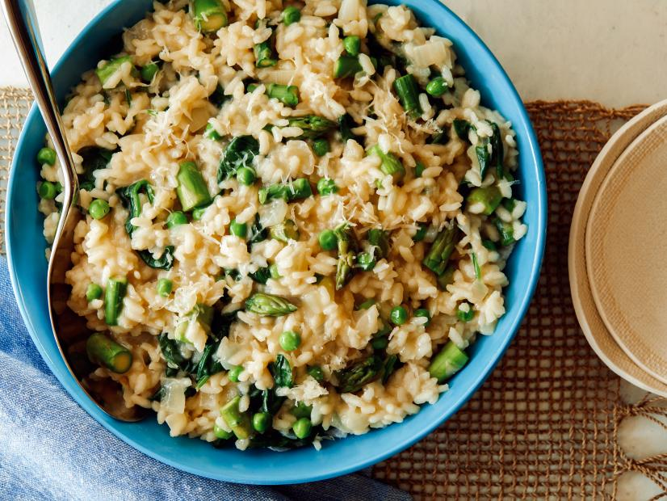

Garden Risotto Recipe
Submitted by: Stephanie

Description
This risotto recipe is deliciuos and tastes so fresh! I love to
make this for my husband and I in the summer, but really it is
fantastic all year round!
Ingredients
- 6 cups low-sodium chicken broth
- 2 teaspoons olive oil
- 1 medium onion, chopped
- 1 1/2 cups Arborio rice
- 1/2 cup dry white wine
- 3/4 teaspoon salt
- Freshly ground black pepper
- 3 lightly packed cups baby spinach
- 1 cup frozen peas
- 1/2 pound asparagus, steamed and cut intoo 3/4-inch pieces
- 1/4 cup freshly grated Parmesan
Instructions
- Bring the broth to a simmer in a medium saucepan. Heat the oil in a heavy
saucepan over moderately low heat and cook the onion, stirring occasionally,
until soft, 3 to 5 minutes. Add the rice and cook, stirring constantly, 1 minute.
Add wine and simmer, stirring constantly, until absorbed, about 1 minute. Add 3/4
cup of the hot broth, the salt and a few grinds of fresh pepper and simmer, stirring
constantly, until broth is absorbed. Continue simmering and adding hot broth, about
3/4 cup at a time, stirring constantly and allowing the broth to be absorbed before
adding more, until rice is almost tender and creamy-looking, about 18 minutes.
- Add the spinach and peas and cook until the spinach is wilted. Add the asparagus and
cook just until the vegetables are hot. Stir in the Parmesan and more broth if the
risotto seems too thick. Serve in soup plates.